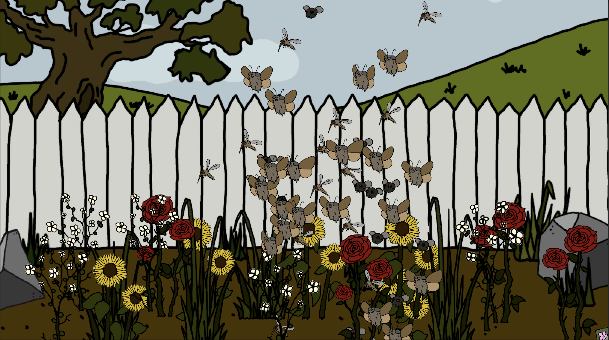
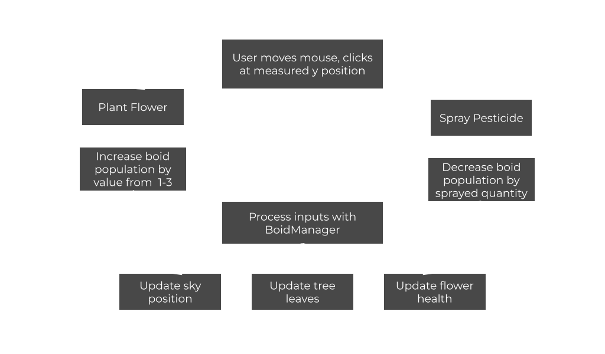

Overview
Boid Bugs is an interactive ecosystem simulation inspired by the concept of the insect apocalypse. A demonstration of the delicate balance between natural growth and ecological collapse, as determined by insect populations and human interaction.
Players interact with a field of insects and flowers — each action influencing the overall balance of the system:
- Click on the empty garden soil to plant flowers and attract new insects.
- Click above the garden soil to spray pesticide clouds that eliminate insects.
- The insect population dynamically affects the environment, influencing the sky, trees, and flower health over time.
- When the population of insects drops too low, the ecosystem begins to decay. Flowers die off, trees lose their leaves, and the sky turns grey with pollution.


Click image to view gallery
Introduction
BOID BUGS is an interactive landscape which utilizes the Boids algorithm to simulate the movement and behavior of insect populations. This project visualizes an ecological system where the player’s interactions influence both individual and collective insect and environmental behavior.
The concept is rooted in the ongoing discussion and study of the “Insect Apocalypse,” the dramatic decline in insect populations worldwide due to pesticide use and environmental changes like global warming. This decline has also resulted in a degradation of ecosystems — a telling sign of the essential services insects provide to keep our world running. BOID BUGS uses the boids model as a symbolic and visual medium to represent this fragile balance.
When the user interacts with the gardenscape, they can plant flowers to attract new insects or spray pesticides to eliminate them. Over time, these actions visibly shape the ecosystem, changing not only the number of insects, but also the health of the environment. As the insect population declines, the sky becomes grim and polluted, the leaves of the trees begin to dwindle, and the plants in the garden start to die. If the user plants more flowers, the insect population increases, and the sky becomes clear, the tree becomes healthy, and a lush garden fills the screen.
This system aims to evoke reflection on human impact and environmental interdependence, noting that every local decision has visible systemic consequences to this world we all share.
Methods
Within Unity and using C#, each insect acts as an instance of a Boid prefab controlled by local rules of alignment, cohesion, and separation. The environment reacts dynamically to player interactions using several key functions:
- BoidManager.cs controls overall population and environment state
- Boid.cs manages per-agent behavior and physics
- CursorManager.cs changes the cursor between pesticide and flower mode
- PesticideZone.cs handles collision-based insect death and despawning
- Flower prefabs spawn new insects (random value from 1–3) when planted
The Boid system used in BOID BUGS is slightly modified, with custom parameters serving the following purposes:
- neighborRadius: sensing radius for other boids
- maxSpeed: maximum movement speed
- alignmentWeight: steering toward group direction
- cohesionWeight: steering toward group center
- separationWeight: avoidance of other boids
Besides the movement system, several aspects of the garden and background provide feedback to the user’s interactions:
- Sky movement corresponds to insect population — darker with fewer insects and clear with many.
- Tree leaves change based on ecological health: lush and green when >15 insects, brown between 5–15, and absent when <5.
- Flower decay begins when population is <10 insects, replacing flowers with dying equivalents before disappearing.

Click image to view gallery
Design Justification
BOID BUGS’ system maps interaction to visual ecological outcomes in a closed feedback loop:
The Boids algorithm provides a well-rounded metaphor for ecological interdependence. Each local decision — even small actions like planting a flower or spraying pesticides — modifies the environment on a global scale without direct control. This relationship between interaction and outcome mirrors, in a simplified form, real environmental systems and their impacts.
Ultimately, it is small, individual actions that collectively define our planet’s health — both our own and the ecosystem services that insects provide.